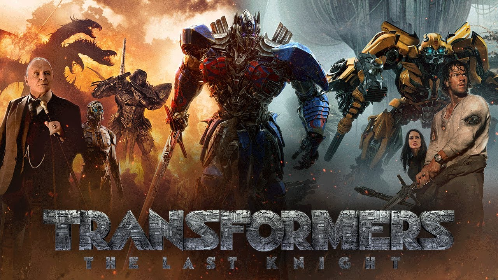
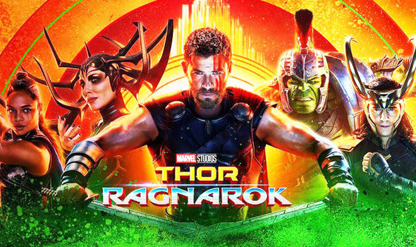
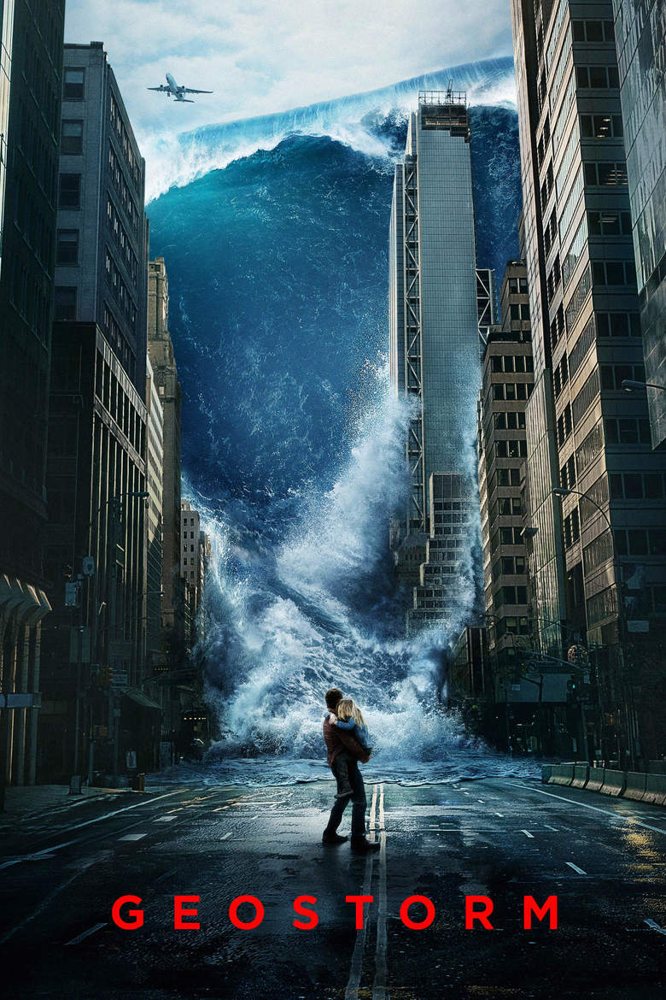

Transformers: The Last Knight (2017)
Genres: Action | Adventure | Sci-Fi
Storyline
In 2029 the mutant population has shrunken significantly and the X-Men have disbanded. Logan, whose power to self-heal is dwindling, has surrendered himself to alcohol and now earns a living as a chauffeur. He takes care of the ailing old Professor X whom he keeps hidden away. One day, a female stranger asks Logan to drive a girl named Laura to the Canadian border. At first he refuses, but the Professor has been waiting for a long time for her to appear. Laura possesses an extraordinary fighting prowess and is in many ways like Wolverine. She is pursued by sinister figures working for a powerful corporation; this is because her DNA contains the secret that connects her to Logan. A relentless pursuit begins - In this third cinematic outing featuring the Marvel comic book character Wolverine we see the superheroes beset by everyday problems. They are aging, ailing and struggling to survive financially. A decrepit Logan is forced to ask himself if he can or even wants to put his ...
Director: Michael Bay
Writers: Art Marcum (screenplay by), Matt Holloway (screenplay by) | 5 more credits »
Stars: Mark Wahlberg, Anthony Hopkins, Josh Duhamel | See full cast & crew »
Box Office
Budget: $217,000,000 (estimated)
Opening Weekend: PHP 165,938,782 (Philippines) (25 June 2017)
Gross: $130,120,862 (USA) (21 August 2017)
Logan (2017)
Genres: Action | Drama | Sci-Fi | Thriller

Storyline
In 2029 the mutant population has shrunken significantly and the X-Men have disbanded. Logan, whose power to self-heal is dwindling, has surrendered himself to alcohol and now earns a living as a chauffeur. He takes care of the ailing old Professor X whom he keeps hidden away. One day, a female stranger asks Logan to drive a girl named Laura to the Canadian border. At first he refuses, but the Professor has been waiting for a long time for her to appear. Laura possesses an extraordinary fighting prowess and is in many ways like Wolverine. She is pursued by sinister figures working for a powerful corporation; this is because her DNA contains the secret that connects her to Logan. A relentless pursuit begins - In this third cinematic outing featuring the Marvel comic book character Wolverine we see the superheroes beset by everyday problems. They are aging, ailing and struggling to survive financially. A decrepit Logan is forced to ask himself if he can or even wants to put his ...
Director:James Mangold
Writers:James Mangold (story by), Scott Frank (screenplay by) | 2 more credits »
Stars:Hugh Jackman, Patrick Stewart, Dafne Keen | See full cast & crew
Box Office
Budget: $97,000,000 (estimated)
Opening Weekend: BRL 27,689,053 (Brazil) (5 March 2017)
Gross: $226,277,068 (USA)
Thor: Ragnarok (2017)
Genres: Action | Adventure | Comedy | Sci-Fi
Storyline
Thor is imprisoned on the other side of the universe and finds himself in a race against time to get back to Asgard to stop Ragnarok, the destruction of his homeworld and the end of Asgardian civilization, at the hands of an all-powerful new threat, the ruthless Hela.
Director: Taika Waititi
Writers: Eric Pearson, Craig Kyle | 4 more credits »
Stars: Chris Hemsworth, Tom Hiddleston, Cate Blanchett | See full cast & crew »
Box Office
Budget: $180,000,000 (estimated)
Opening Weekend: AUD 10,135,906 (Australia) (29 October 2017)
Gross:$223,176,304 (North America) (15 November 2017)
Geostorm (2017)
Genres: Action | Sci-Fi | Thriller
Storyline
When catastrophic climate change endangers Earth's very survival, world governments unite and create the Dutch Boy Program: a world wide net of satellites, surrounding the planet, that are armed with geoengineering technologies designed to stave off the natural disasters. After successfully protecting the planet for two years, something is starting to go wrong. Two estranged brothers are tasked with solving the program's malfunction before a world wide Geostorm can engulf the planet.
Director: Dean Devlin
Writers: Dean Devlin, Paul Guyot»
Stars: Gerard Butler, Jim Sturgess, Abbie Cornish | See full cast & crew »
Box Office
Budget: $120,000,000 (estimated)
Opening Weekend: AUD 1,539,180 (Australia) (22 October 2017)
Gross:$136,953,368 (worldwide) (29 October 2017)
The Foreigner (2017)
Genres: Action | Crime | Drama | Mystery | Thriller
Storyline
The story of humble London businessman Quan (Chan), whose long-buried past erupts in a revenge-fueled vendetta when the only person left for him to love - his teenage daughter - is taken from him in a senseless act of politically-motivated terrorism. In his relentless search for the identity of the terrorists, Quan is forced into a cat- and-mouse conflict with a British government official (Brosnan), whose own past may hold clues to the identities of the elusive killers. Written by STXfilms
Director:Martin Campbell
Writers: David Marconi (screenplay by), Stephen Leather (based on the novel "The Chinaman" by)»
Stars: Katie Leung, Jackie Chan, Rufus Jones | See full cast & crew »
Box Office
Budget: $35,000,000 (estimated)
Opening Weekend: AUD 132,211 (Australia) (15 October 2017)
Gross:$33,727,866 (North America) (15 November 2017)